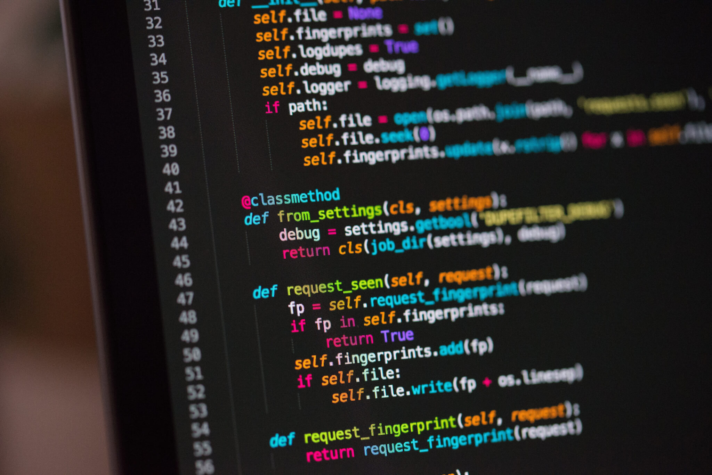

C'est quoi un Développeur logiciel ??
Un développeur logiciel est un professionnel qui conçoit, développe, teste et maintient des applications et des systèmes logiciels. Son rôle est central dans la création de logiciels qui répondent aux besoins des utilisateurs, qu'il s'agisse d'applications mobiles, de logiciels d'entreprise, de sites web, ou de systèmes embarqués. Les développeurs logiciels travaillent sur des projets variés, allant de la simple application de gestion à des systèmes complexes d'intelligence artificielle.
Ses rôles
| Analyse des Besoins | Conception et Architecture | Développement |
|  |  | |
| Rédaction des Spécifications : Documente les exigences sous forme de spécifications détaillées qui serviront de base à la conception et au développement du logiciel. | Conception des Interfaces Utilisateur : Collabore avec les concepteurs UX/UI pour créer des interfaces utilisateur intuitives et attrayantes qui répondent aux besoins des utilisateurs finaux. | Écriture du Code : Programme les fonctionnalités du logiciel en utilisant divers langages de programmation (comme Python, Java, C++, JavaScript, Ruby, etc.) et suit les meilleures pratiques de codage, telles que l'utilisation de structures de données appropriées, l'écriture de code propre et réutilisable, et la gestion des erreurs. |
Retour au sommaire